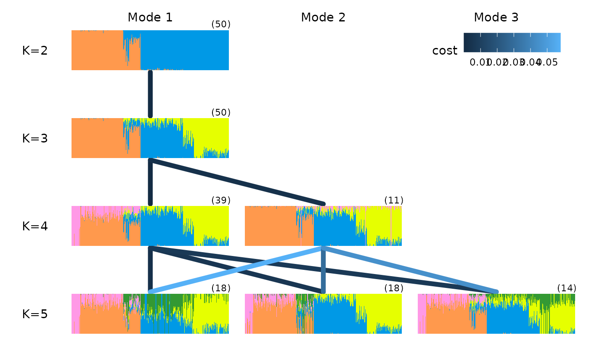
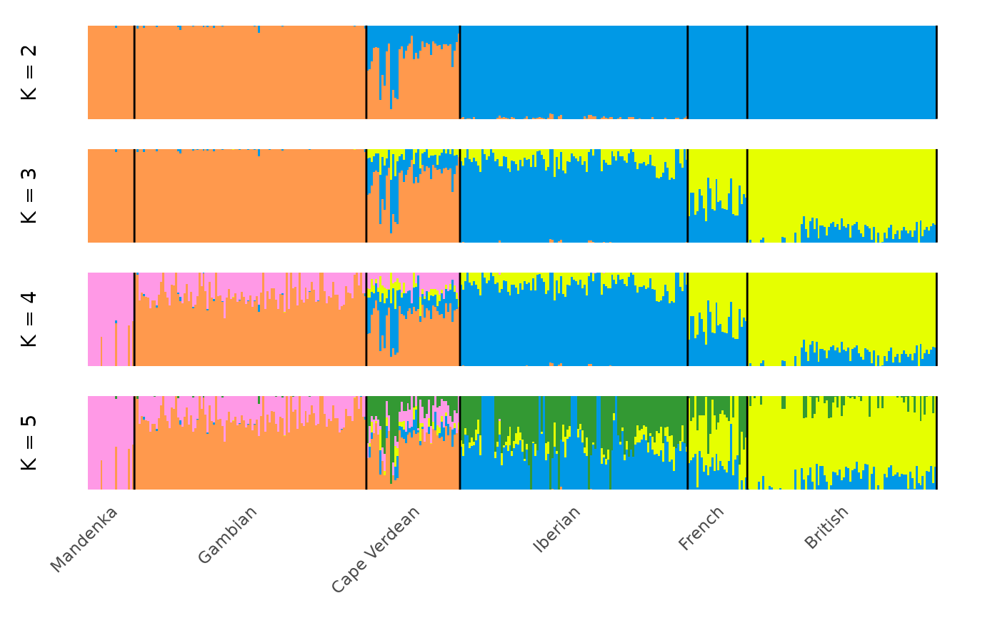
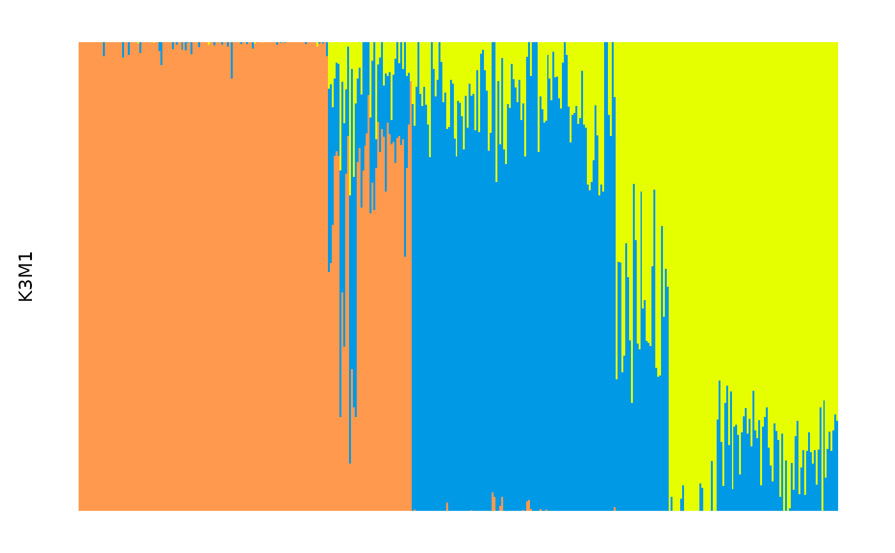

An autoplot method to generate quick visualisations for gt_clumppling
objects. Available types are:
'modes': all aligned modes in structure plots over a multipartite graph, where better alignment between the modes is indicated by the darker color of the edges connecting their structure plots (the colour scale of the costs of optimal alignment is shown in an empty cell of the grid, if there is one), and the number of replicates in each mode is given in brackets.
'modes_within_k': all the modes with
kclusters, in a series of structure plots.'major_modes': the major modes of each K aligned in a series of structure plots.
'all_modes': all aligned modes in a series of structure plots.
Arguments
- object
a
gt_clumpplingobject- type
the type of plot, one of 'modes', 'modes_within_k', 'major_modes' or 'all_modes'.
- group
a vector of membership to a-priori groups (e.g. populations). Note that individuals from the same group need to be adjacent to each other
- k
the k value to be plotted if 'type' is 'modes_within_k'
- ...
not used at the moment
Details
autoplot produces simple plots to quickly inspect an object. They are not
customisable; we recommend that you use ggplot2 to produce publication
ready plots.
If you would like to generate an annotated autoplot, ensure that all individuals from the same population are adjacent to one another in the Q-matrix or gt_admix object supplied to gt_clumppling. Autoplot 'group' argument requires that all individuals from the same group are adjacent.
Examples
# the runs of ADMIXTURE for K = 2 to 5 of the Cape Verde example of
# clumppling, aligned into modes
capeverde <- readRDS(
system.file("extdata", "capeverde_admix.rds", package = "tidygenclust")
)
clump_res <- gt_clumppling(capeverde, seed = 1)
# all the modes, linked by the costs of their alignment
# \donttest{
autoplot(clump_res, type = "modes")

# }
# the major mode of each K, labelled with the populations (whose
# individuals are adjacent in the Q matrices)
autoplot(clump_res, type = "major_modes", group = capeverde_pops)

# the modes with K = 3
autoplot(clump_res, type = "modes_within_k", k = 3)
